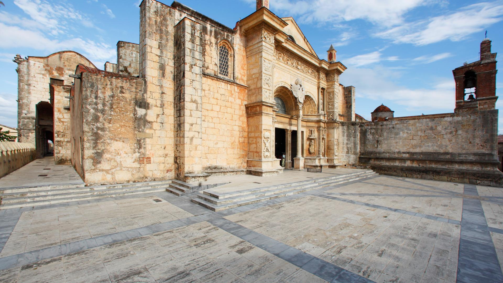
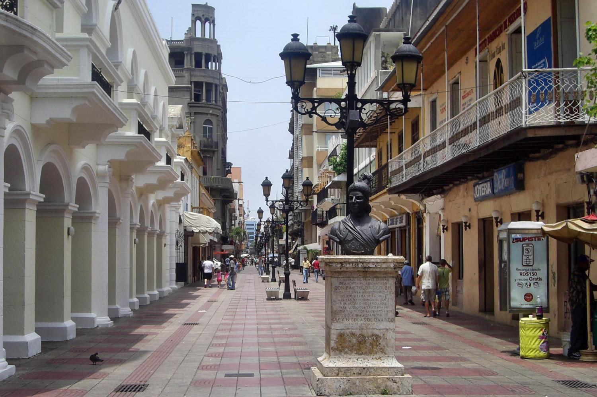

Gran variedad de restaurantes y gastronomía. Disfruta de la buena música mientras te deleitas con exquisitos platillos.
Gran variedad de restaurantes y gastronomía. Disfruta de la buena música mientras te deleitas con exquisitos platillos.
Gran variedad de restaurantes y gastronomía. Disfruta de la buena música mientras te deleitas con exquisitos platillos.
La Ciudad Colonial es el núcleo urbano más antiguo de la ciudad de Santo Domingo, capital de la República Dominicana. La Ciudad Colonial fue el primer asentamiento europeo permanente en América, fundada en 1502 por los colonizadores españoles
Esta área de Santo Domingo cuenta con edificios coloniales y calles con vetustos adoquines de gran atractivo turístico, como son el Alcázar de Colón, el Museo de las Casas Reales, la Catedral Primada de América y la Fortaleza Ozama.
El principal objetivo de esta construcción fue proteger a la ciudad de los diversos ataques de los piratas y conquistadores ingleses, franceses y portugueses.
La Fortaleza Ozama fue llamada durante la época colonial Torre del Homenaje, aunque posteriormente era llamada también Torre de la Vigía o de la Vigilancia, ya que en la parte superior se podía observar la entrada del río Ozama y la costa del Mar Caribe.
La catedral de Santo Domingo es la más antigua de América, construida por mandato del papa Julio II en 1504. Sede de la Arquidiócesis de Santo Domingo, su construcción comenzó en 1512, bajo el gobierno pastoral del primer obispo de Santo Domingo, fray García Padilla, que nunca llegó a la isla; sobre la base de planos del arquitecto Alonso de Rodríguez.
Parados los trabajos, continuaron con un nuevo diseño por Luis de Moya y Rodrigo de Liendo en el 1522 con intervención del obispo Alejandro Geraldini.
Explora los lugares mas acogedores y curiosos de la Zona Colonial. Ideal para dar un paseo en familia o simplemente conocer y explorar.
En la Ciudad Colonial hay diversos lugares construidos por los españoles durante la época colonial, que en conjunto forman más de 300 lugares históricos de la zona; entre estos se encuentran diversos monumentos de carácter cultural e histórico
Conoce lugares